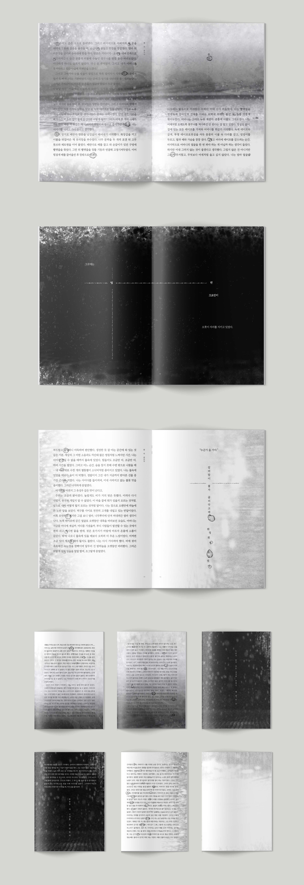
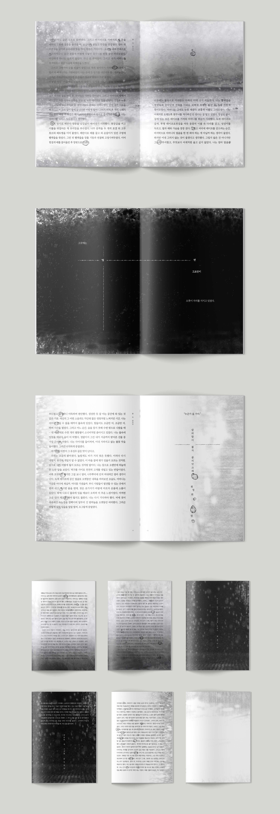

Readiset Studio is an experimental and creative design lab led by three designers who transcend boundaries, working across print to graphic and interactive media.
Readiset Studio is an experimental and creative design lab led by three designers who transcend boundaries, working across print to graphic and interactive media.
148*210mm
A short story from Kim Ae-ran's "Contrail": cover and interior design.
The story of a small individual who has to treat such a world alone with an endless summer rainy season. It was intended to show the continuity of the water droplets formed by the rising water and the visual shape of the Goliath crane.
 
